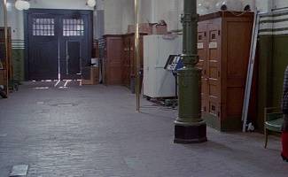
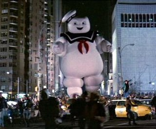

Parapsychologists Peter Venkman, Raymond Stantz, and Egon Spengler were scientists working for Columbia University. After being called to the New York Public Library to investigate the recent paranormal activity, they encounterd a full-fledged ghost but she frightend them away. They lost their jobs at the university after that, so the trio established the Ghostbusters, a paranormal investigation and elimination service. They developed high-tech equipment to capture ghosts and they opened their business in a disused, run-down firehouse. In their first outing, Egon warns them never to cross the energy streams of their proton pack weapons, as this could cause a catastrophic explosion, and they captured their first ghost, Slimer, depositing it in a specially built containment unit in the firehouse basement. As the paranormal activity increased in New York City, they hired a fourth member, Winston Zeddemore, to cope with demand.
The Ghostbusters were then called by cellist Dana Barrett, whose apartment was haunted by a demonic spirit, Zuul, a demigod worshipped as a servant to Gozer the Gozerian, a shape-shifting god of destruction and chaos. As the Ghostbusters investigated, Dana was possessed by Zuul, which declared itself the "Gatekeeper", and Louis was also possessed by a similar demon, Vinz Clortho, the "Keymaster". Both demons speaked of the coming of the destructive Gozer and the release of the imprisoned ghosts. The Ghostbusters took steps to keep the two apart.
Walter Peck, a lawyer representing the Environmental Protection Agency, had the Ghostbusters arrested for operating as unlicensed waste handlers and he orderd their ghost containment system deactivated, causing the explosion that released the ghosts and Louis/Vinz. The ghosts wreaked havoc throughout the city while Louis/Vinz advanced toward Dana/Zuul's apartment. After consulting blueprints of Dana's apartment building, the Ghostbusters learned that mad doctor and cult leader Ivo Shandor, declared humanity too sick to deserve existing after World War I, designed the building as a gateway to summon Gozer and bring about the end of the world.
The Ghostbusters were released from custody to combat the supernatural crisis. On the apartment building roof, Zuul and Vinz opened the gate between dimensions and they transformed into supernatural hellhounds. Gozer, in the form of a woman, is subdued by the team, disappearing entirely, as her voice echoes that the "destructor" will follow, taking a form chosen by the team; Ray inadvertently recalls a beloved corporate mascot from his childhood "something that could never, ever possibly destroy us" and the destructor arrived in the form of a giant Stay Puft Marshmallow Man that attacked the city. The Ghostbusters crossed their proton pack energy streams and fire them at Gozer's portal; the explosion closed the gate, destroys Stay Puft/Gozer, and frees Dana and Louis. The Ghostbusters were welcomed on the street as heroes. After these events we changed our company name to Bust A Ghost and we continued to work catching ghosts, and we still are today. Also these events were made in a documentry about us.
/* https://www.theraffon.net/~spookcentral/loc_ca_firehouse.htm */
/* https://en.wikipedia.org/wiki/Stay_Puft_Marshmallow_Man */
/* “Ghostbusters.” Wikipedia, Wikimedia Foundation, 17 Apr. 2018, en.wikipedia.org/wiki/Ghostbusters. */

